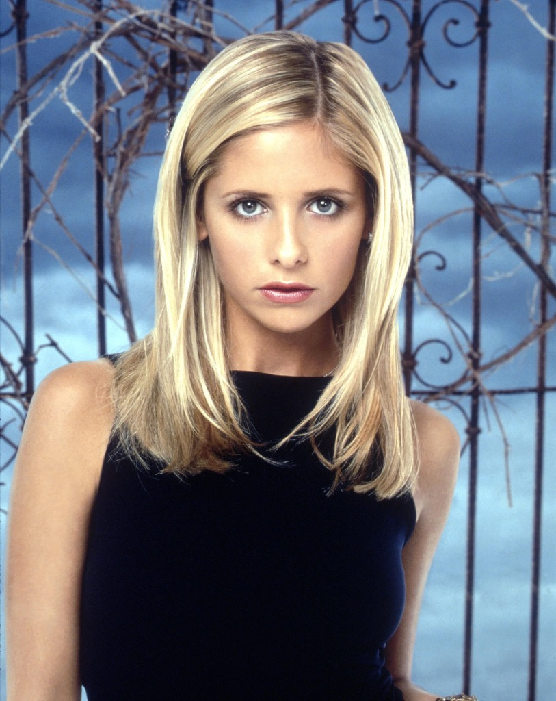

Slayer’s Summons
“Into every generation, a brunch reservation is born.”
An anomalous convergence has been detected in Adams Morgan—well outside the Sunnydale Hellmouth, and suspiciously far from The Bronze.
Giles cleaned his glasses twice and cross-referenced the Vampyr tome, the Aurelius chronicles, and three dusty scrolls from The Magic Box. No apocalypse is forecast, no Key is involved, and the Gentlemen have not been spotted. Still, an unaligned figure calling himself “Jason” has secured a sunlit table at Lapis—high noon, effectively ruling out vampires (barring a Gem of Amara situation)—and requested Gel by name.
Mr. Pointy is optional. A Scooby-level appetite is not.